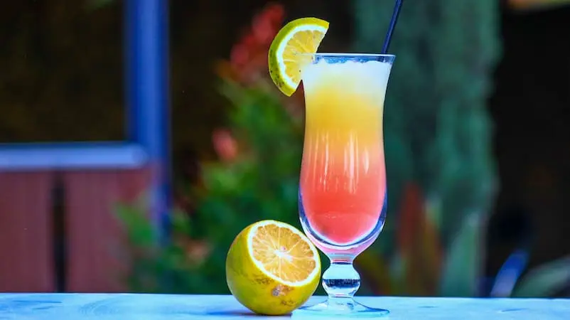

Tequila Sunrise

Un cocktail coloré à l'orange, avec un dégradé qui rappelle un lever de soleil.
★★★★☆
Ingrédients
- 5 cl de tequila
- 10 cl de jus d'orange
- 1,5 cl de sirop de grenadine
- Glaçons
Préparation
- Remplir un grand verre de glaçons.
- Verser la tequila, puis le jus d'orange.
- Verser doucement la grenadine : elle coule au fond et crée le dégradé.
- Servir sans mélanger.